00 · App welcome
Put alcohol back in its place
with Non-Contemplative Meditation.
Already have an account? Sign In
Let’s Get Started
with Non-Contemplative Meditation.
Already have an account? Sign In
you’re in the right place.
Alcohol is a powerful social lubricant. But less alcohol means more energy, less brain fog and fewer regrets.
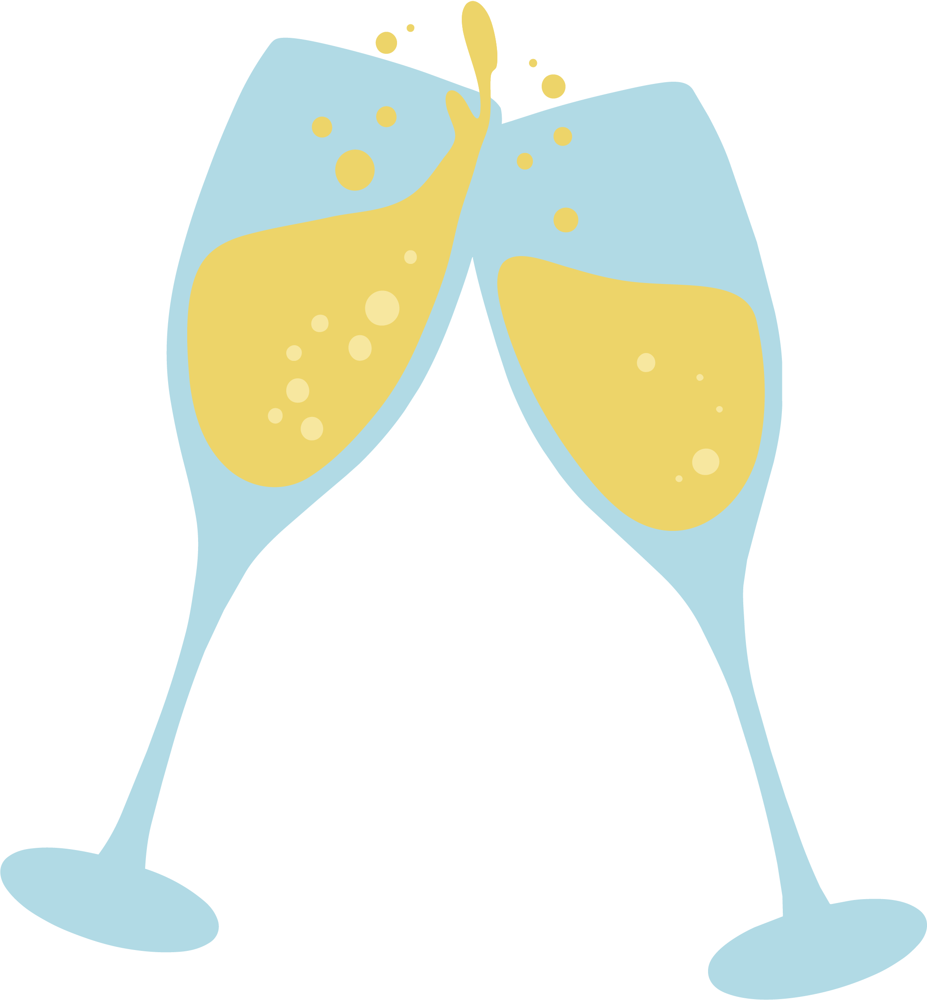
Sleep better, think more clearly, have more energy, and repair relationships with loved ones.
Become your true self again.
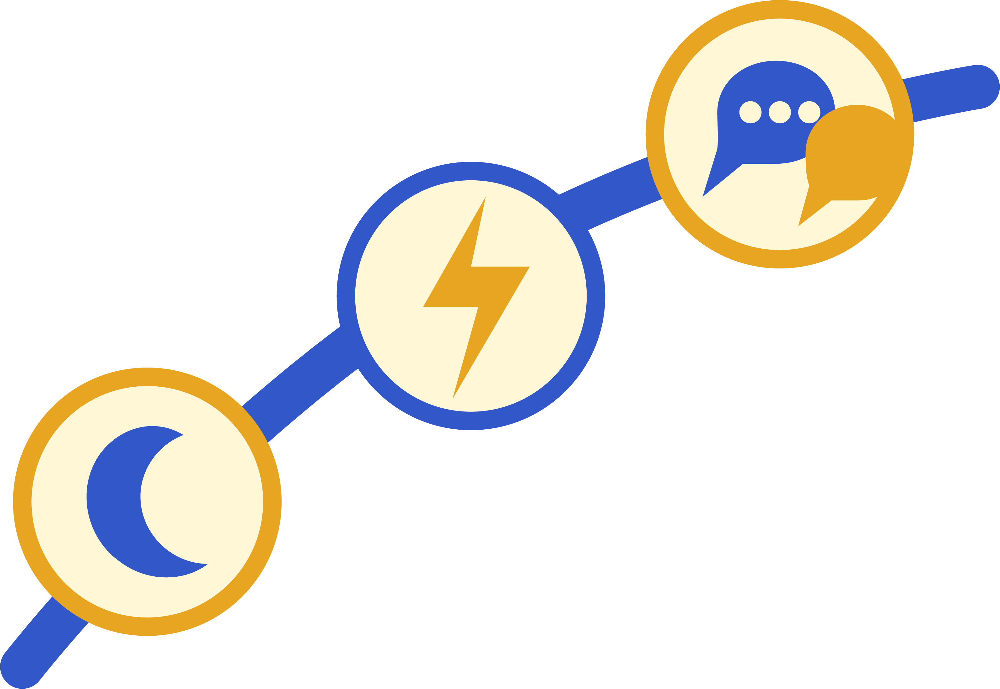
The problem isn’t that you need to try harder. The See App helps you access a space within where choice is restored, naturally.
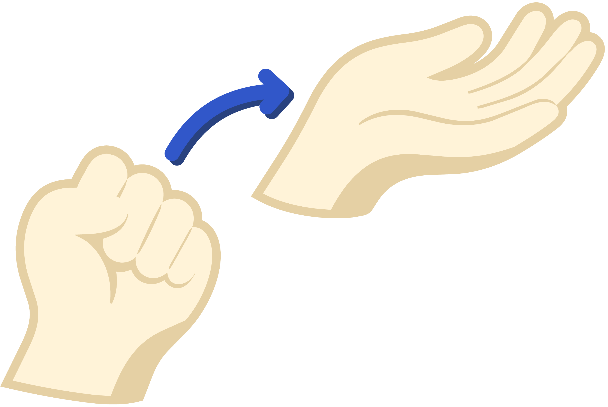
Let’s put that total into perspective.
That can mean…
Select all that apply.
All of that improves as you drink less, and that’s just the beginning.
All of that improves when you stop drinking, and that’s just the beginning.
Give your natural sleep cycles a better chance to work. Rest deeply, recover fully, and wake up ready.
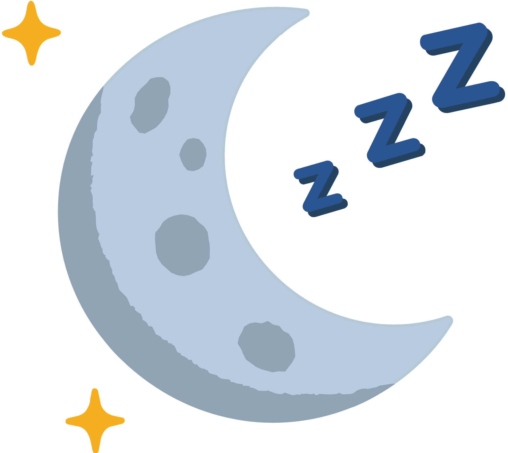
Fewer sluggish mornings. Less wasted time and more initiative throughout the day
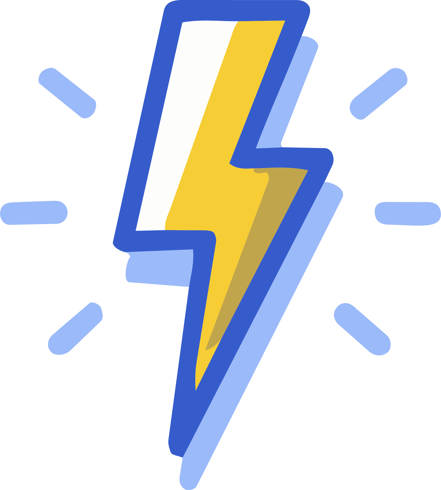
Your body gets a break. Lower blood pressure, less inflammation, better digestion, and stronger immune defense.
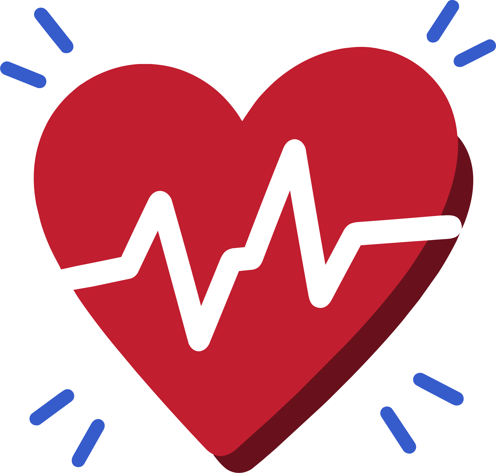
Your attention comes back online. You finish tasks and get things done faster.
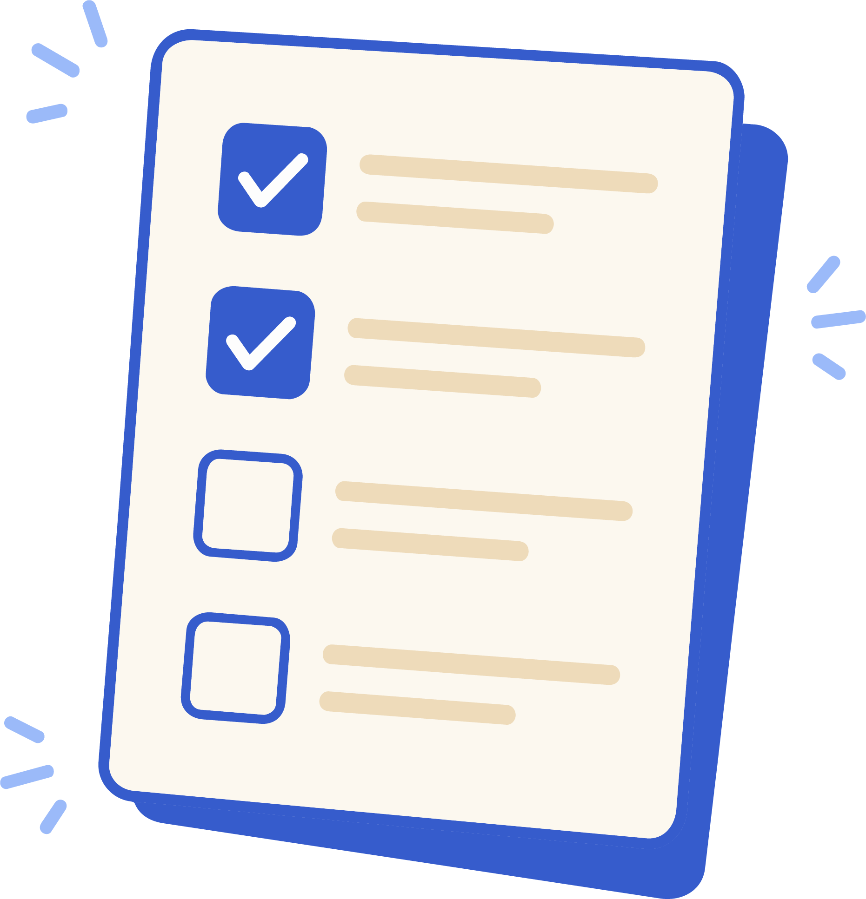
As the fog lifts. You feel more confident as recall becomes easier and thinking becomes clearer.
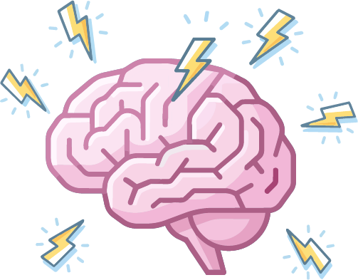
Freedom from anger and increased patience with friends and loved ones — the people in your life who matter.
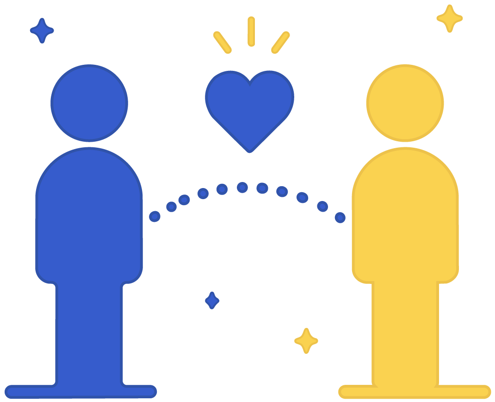
Because it always begins before the first drink.
Like where you’ll be, who you’ll be with, what you’ll drink, or how it'll make you feel?
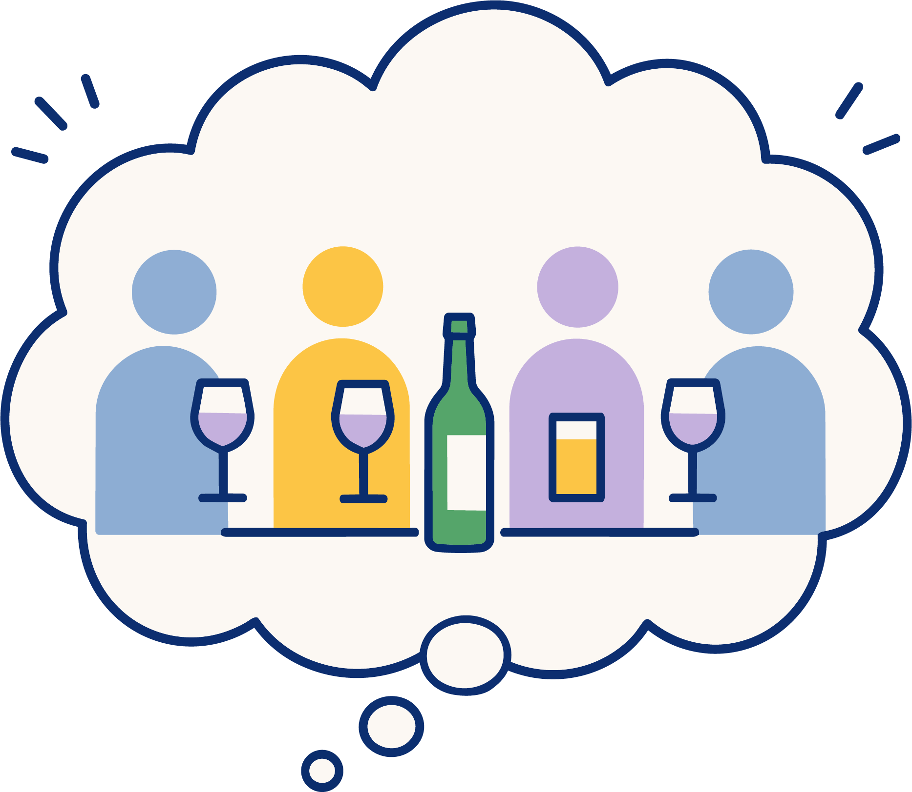
Your mind starts drinking before your body does. It rehearses the reward—the confidence, connection, excitement, or relief—before you ever take the first sip.
That noise is the mental activity that automatically pushes you toward drinking—with or without your permission.
Discover how to observe thoughts without automatically obeying them.
Once you see them, they no longer control what happens next. You do.
When others are drinking, or even when you're alone. You might even plan against it.
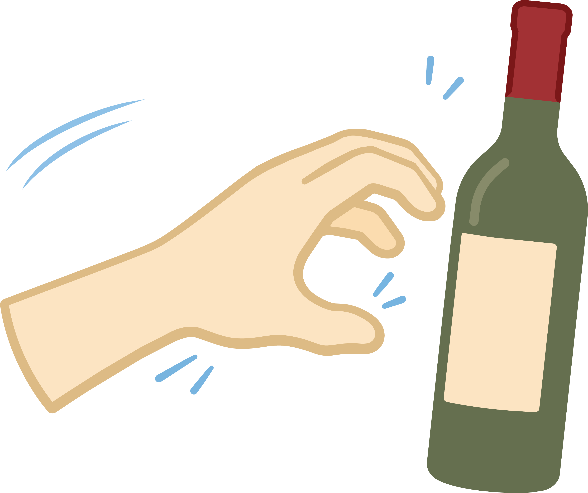
The opportunity appears—a party, a business event, a night out—and years of conditioning take over.
You’re drinking before you’ve truly decided to. You’re on autopilot.
The See App helps you notice the automatic push toward drinking as it’s happening—before it turns into action.
Awareness arrives first. Then choice becomes possible.
The See App helps you notice the thoughts and urges before they take over.
Awareness arrives first. Then choice becomes possible.
Something still leads to the first drink—even if you don’t notice it yet.
The See App helps you recognize that moment more clearly. And with that awareness, choice becomes possible.

10 minutes. Twice a day.
No mantras, hypnosis, or breathwork. No mood music or sound effects. Nothing to learn, just to see.
Tap classic, prime, or flash.


“You are about to hear a small, short sample…”

Dan Schwarzhoff guides each session of Non-Contemplative Meditation using the same approach he's taught to thousands.
Alcohol-free for more than 30 years, Dan understands the obsession with drinking from personal experience — but also the solution.

No New Age narratives. No Eastern philosophy.
Works within your faith, and even alongside spiritual recovery fellowships.
Take it from real people who’ve been there.
“I forgot I even wanted to drink. That never happened before.”
Kimi, London, Ohio
“It literally saved my life. I absolutely love the app. It never gets monotonous.”
Si, England
“This app made quitting easier. I’m more awake, aware, and clear-headed than ever.”
Matt, Bremen, Germany
“I could never meditate before. This is working. My partner, boss, colleagues, and friends have noticed a difference too.”
Mairi Anna, Edinburgh, Scotland
“The benefits—too numerous and some too private to mention—just keep on coming.”
Mark, New South Wales, Australia
“It’s changed everything. What has changed is how I perceive everything.”
Scott, Chonburi, Thailand
“The effect was immediate. It was just what I needed to snap out of years of self-pity, regret, and resentment.”
Bobby, North Kingstown, Rhode Island
“Amazing. It’s life-changing. Thank you for everything you do.”
Sharon, Suffolk, England
“Meditation has changed my life. It works, and it is a godsend. Thank you! I am free and recovered!”
Jeanne Marie, Rockland, New York
“Since I stopped drinking, my mood lifted. I’m healthier and happier. This is the real deal.”
Lindy, Menominee, Michigan
“Amazing! I am a clinical psychologist. My life changed drastically when I really committed to meditation.”
Barbara, Antigua, Guatemala
See is personalized around you.

Full access to the See app’s guided sessions and one-tap selection tailored to your usage.
We’ll send you an email reminder before your trial ends.
Your subscription starts. Cancel anytime before then.
Non-Contemplative Meditation addresses the root cause behind the urge to drink.
Become focused, productive, and calm under pressure with 10 minutes a day
Perfectly timed, fully guided sessions chosen for you with one tap.
Unique, 3-minute, midday meditations that fit into your busy schedule.